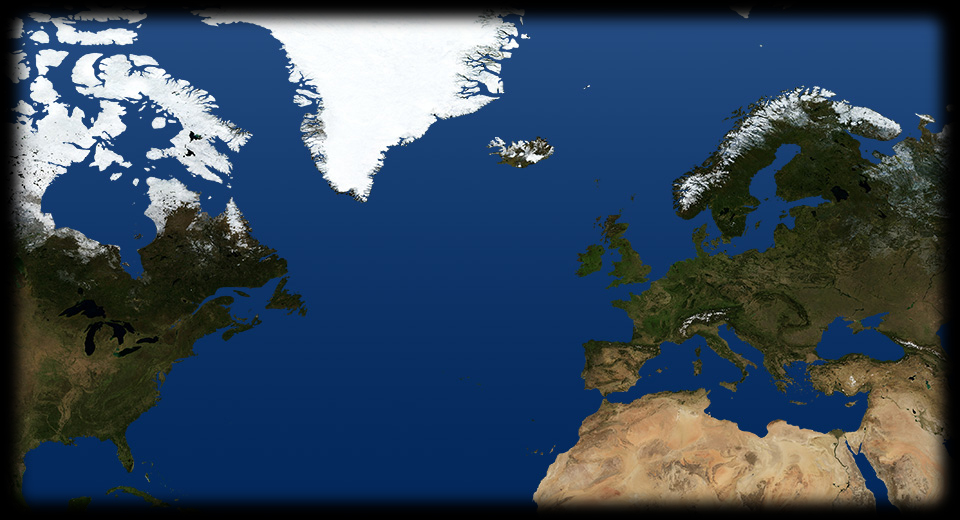

- 215 890
- 365 100
- 290 700
- 255 650
- 175 850
- 245 705
- 285 625
- 205 640
- 395 60
- 295 670
-
MOSCA
La Rivoluzione bolscevica del 1917 vede schierati tra le sue fila i più importanti artisti e poeti russi, che prestarono la loro opera alla propaganda politica, come El Lissitskij nel famoso manifesto Colpire i bianchi con il cuneo rosso! STATI UNITI
Nel 1917 gli Stati Uniti intervengono nel conflitto in funzione antitedesca: questo manifesto di propaganda questo manifesto di propaganda invita ad arruolarsi per fermare il militarismo tedesco.CAPORETTO
Ottobre 1917. Disastro del nostro esercito a Caporetto. L'Austria avanza per 150 chilometri. L'Italia si assesta sulla linea del Piave. Nel governo Vittorio Emanuele Orlando succede a Boselli, mentre, sul fronte militare, il gen. Diaz sostituisce il gen. Cadorna. In questa fotografia del 1917 si vede la ritirata delle truppe italiane dopo la sconfitta.FIANDRE
Il battaglione di volontari degli Artists Rifles raggruppa artisti ed intellettuali inglesi che combattono sul fronte occidentale. Uno di essi è John Nash, autore di questo dipinto intitolato Sulla cima, che raffigura il sanguinoso attacco di Cambrai.RUSSIA
Marzo 1917: in Russia, a Pietrogrado, scoppia la mettere Rivoluzione di Febbraio. Sale al potere un governo rivoluzionario guidato da Kerenskji. La rivoluzione accelera il processo di disgregazione dell'esercito russo, che a causa dell'arretratezza industriale del paese si trova in una situazione disastrosa: scarseggiano le armi e i rifornimenti di cibo. I soldati abbandonano il fronte per tornare nelle campagne e partecipare, crollato il regime zarista, alla spartizione delle terre dei nobili.GERMANIA
I tedeschi avanzano sul territorio russo, e possono spostare numerose divisioni dell'esercito sul fronte occidentale. Scioperi in Germania e Austria, e manifestazioni popolari contro la guerra.FRANCIA
Gli ammutinamenti nell'esercito francese coinvolgono oltre 40.000 soldati. Le autorità militari rispondono con fucilazioni sommarie e condanne a morte.MARE DEL NORD
I tedeschi dichiarano la guerra sottomarina illimitata: colpiranno tutte le navi che fornivano aiuti all'Intesa, anche quelle dei paesi neutrali.USA
La dichiarazione di guerra sottomarina illimitata provoca nell'aprile 1917 l'intervento americano. Gli Stati Uniti, la nazione più industrializzata del mondo, con il presidente Wilson intervengono a favore dell'Intesa, seguiti da Cina, Brasile e altre repubbliche latinoamericane.TORINO
L'Italia con il generale Cadorna sferra nuovi attacchi sull'Isonzo, con poche vittorie e tante perdite. A Torino in agosto si ha una grande manifestazione popolare contro la guerra, che sfocia in una sommossa. Molto alta la partecipazione operaia.